Highlights
- 💡 Edge-side embodied perception: VLX-Seek 1.5 is optimized for practical embodied scenarios such as drones, robots, robotic dogs, surveillance cameras, and inspection systems.
- 📦 Multi-scale model family: VLX-Seek 1.5 is planned in three sizes, 0.6B, 3B, and 10B, covering different trade-offs between latency, compute cost, and perception capability.
- 💪 Stronger detection: The new version improves detection for complex semantic targets and embodied scenes through expanded training data, a stronger Aux Vision Tower, and an upgraded VLM backbone.
- 📊 Strong benchmark performance: VLX-Seek 1.5 achieves stronger results than detection-enhanced VLMs such as LocateAnything and several larger open-source or closed-source models on multiple fine-grained perception and embodied grounding benchmarks.
- 🚀 Faster inference: Faster OPN proposals and more Linear Attention layers make VLX-Seek 1.5 more suitable for latency-sensitive edge-side deployment.
- 🔍 Fewer object hallucinations: Hard-negative rejection training and an explicit
Noneoutput format help the model avoid grounding objects that are not present in the image. - 🗃 Open-source release: We will open-source the VLX-Seek 1.5 10B model and report benchmark results for the 3B and 10B models.
1. Introduction
VLX-Seek was introduced as a fine-grained perception vision-language model for edge-side embodied vision. Instead of asking a language model to directly generate fragile coordinate strings, VLX-Seek reformulates localization as region retrieval and region reference: visual regions are represented as addressable entities, and the model answers by selecting, comparing, and referring to these regions.
VLX-Seek 1.5 is the next step in this direction. This release focuses on making fine-grained visual grounding stronger, faster, and more reliable for edge-side embodied intelligence. The improvements are not isolated benchmark optimizations; they are designed around practical deployment needs, where a model must detect targets accurately, respond quickly, and avoid hallucinating objects that are not present. Compared with the previous version, VLX-Seek 1.5 improves detection capability for complex semantic targets and embodied scenes, accelerates inference with a more efficient model family and attention design, and reduces hallucinated localization through stronger rejection training and a more explicit input-output format. On multiple fine-grained perception and embodied grounding benchmarks, VLX-Seek 1.5 also shows stronger results than detection-enhanced VLMs such as LocateAnything and several larger open-source or closed-source models.
This direction is motivated by scenarios where visual perception must be both accurate and deployable: drones need to detect complex targets or events from aerial views, robots and robotic dogs need to identify objects or events for navigation and interaction, and surveillance cameras need to ground complex targets or events under wide-angle, crowded, or low-resolution conditions. In these settings, better detection, faster inference, and lower hallucination directly affect whether a model can be used in real applications. A deployed embodied system must not only recognize what is visible, but also identify which instance or event is being referred to, where it is, and when a requested target is absent.
VLX-Seek 1.5 is planned as a model family with three sizes: 0.6B, 3B, and 10B. In this blog, we report benchmark results for the 3B and 10B models, and we will open-source the 10B version.
2. Overview of VLX-Seek 1.5
VLX-Seek 1.5 is designed as a multi-scale fine-grained perception model family, covering 0.6B, 3B, and 10B variants. The goal is to support different deployment needs with a consistent region-based grounding interface: smaller models can serve latency-sensitive edge-side perception, while larger models can provide stronger reasoning and detection performance for more demanding embodied applications. Across these scales, the central objective is practical embodied deployment rather than simply increasing benchmark scores.
The release continues the core design of VLX-Seek: turning visual regions into addressable entities that a VLM can select, compare, and refer to. On top of this region-centric formulation, VLX-Seek 1.5 strengthens the visual perception stack, expands embodied-scene training coverage, improves inference efficiency, and makes target rejection more explicit. These changes all point to the same application goal: making visual grounding accurate enough for complex embodied scenes, fast enough for interactive edge-side systems, and reliable enough to handle absent targets without overconfident false detections.
In this blog, we focus on four evaluation perspectives. First, we evaluate general recognition and grounding ability on benchmarks such as COCO, LVIS, HumanRef, RefCOCO, ODinW, and Pixmo-Count. Second, we test drone-scene perception on VisDrone and RefDrone, where small objects, dense layouts, and aerial viewpoints are central challenges. Third, we evaluate embodied robot scenarios on RefSpatial and EmbSpatialBench, where spatial reasoning and instruction-conditioned grounding are especially important. Finally, we evaluate object hallucination on HumanRef, VisDrone, and RefDrone to measure whether the model avoids detecting objects that are not present.
3. Model-Level Updates
The model-level updates in VLX-Seek 1.5 are organized around one deployment-oriented goal: making fine-grained perception more practical for edge-side embodied intelligence. In real applications, a model needs to detect complex targets accurately, run fast enough for interactive systems, and avoid overconfidently grounding objects that are not present. VLX-Seek 1.5 therefore improves the previous version along three dimensions: stronger visual capability, faster inference, and fewer hallucinations.
3.1 Stronger Visual Capability
VLX-Seek 1.5 strengthens visual perception for both complex semantic targets and embodied scenes. Compared with the previous version, we expand the training mixture with more data from drone-view, surveillance-view, robot-view, and other embodied perception scenarios. These data sources expose the model to the kinds of visual conditions that often appear in deployment: small objects, dense layouts, unusual viewpoints, long-tail categories, and instruction-conditioned target descriptions.
We also upgrade the visual perception stack. VLX-Seek 1.5 uses a stronger Aux Vision Tower that improves both vision-language alignment and pure visual feature quality. Together with a stronger VLM backbone, this improves the model's ability to distinguish visually similar instances, understand complex referring expressions, and detect targets in challenging embodied environments.
3.2 Faster Inference
VLX-Seek 1.5 is also designed to be faster and more deployable. The model family includes 0.6B, 3B, and 10B variants, allowing different systems to choose a suitable trade-off between latency, compute cost, and perception quality. This is especially important for edge-side embodied systems, where drones, robots, robotic dogs, and monitoring cameras often operate under limited compute and power budgets.
Beyond model size, VLX-Seek 1.5 introduces more Linear Attention layers and a faster OPN to improve inference efficiency while reducing memory usage. It also inherits the region-reference formulation from VLX-Seek: instead of decoding long coordinate strings for every target, the model can produce compact references to candidate regions. This shortens the localization output path, which is particularly useful for multi-object grounding and interactive perception.
3.3 Fewer Hallucinations
Reliability is another central focus of VLX-Seek 1.5. In open-world embodied scenarios, hallucinated detections can be more harmful than missing an uncertain target: a robot may navigate toward the wrong object, a drone may track a nonexistent target, or a monitoring system may raise a false alarm. To reduce this risk, VLX-Seek 1.5 adds more hard-negative rejection samples during training and improves the detection input-output format for prompts that contain both present and absent targets.
In the previous implicit format, when a prompt asked for targets A and B and only A existed in the image, the model could simply return the detection result for A and omit B. VLX-Seek 1.5 moves toward a more explicit format: the model should return the detection result for A and mark B as None. This teaches the model not only how to ground visible targets, but also how to explicitly reject absent ones. The result is a more reliable grounding behavior for real-world embodied systems, where knowing that a requested object is missing is often as important as finding the objects that are present.
4. Embodied and Edge-Side Visual Understanding
Embodied visual intelligence is different from offline image understanding. A deployed system often needs to perceive, decide, and act in a continuous loop. For drones, robots, robotic dogs, monitoring cameras, mobile devices, and inspection systems, visual grounding is not only about naming objects in an image; it is about building stable spatial anchors that can support navigation, interaction, tracking, inspection, and safety-critical monitoring.
These scenarios also expose models to visual conditions that are underrepresented in standard web-image benchmarks. Drone-view perception often involves tiny objects, dense target layouts, large scale variation, and oblique viewpoints. Surveillance and mobile-camera settings introduce wide-angle distortion, low resolution, crowded scenes, motion blur, and privacy-sensitive data that may need to be processed close to the sensor. In these cases, a model must generalize beyond clean object-centric images and remain reliable under difficult real-world viewpoints.
Robot-centric perception brings another set of requirements. A robot or robotic dog may need to identify the cup next to the laptop, the person behind the chair, or the object mentioned in a natural-language instruction. This requires more than category recognition: the model must understand spatial relations, distinguish object instances, follow instruction-conditioned queries, and know when the requested target is not present. For embodied agents, an incorrect grounding result can directly affect downstream actions.
This is why VLX-Seek 1.5 emphasizes edge-side practicality. Limited compute, limited power budgets, real-time interaction, network instability, and privacy requirements all make efficient local perception important. The region-reference formulation helps reduce localization decoding cost compared with coordinate generation, especially when multiple objects need to be grounded. Meanwhile, the 0.6B, 3B, and 10B model family is intended to cover different edge-to-cloud deployment patterns, from lightweight on-device perception to stronger server-side or robot-base-station reasoning.
5. Benchmark Results
We report benchmark results for VLX-Seek 1.5-3B and VLX-Seek 1.5-10B across four groups of evaluations. Tables 1-3 cover general object detection, referring expression comprehension, and counting benchmarks; Table 4 focuses on drone-view perception; Table 5 evaluates embodied spatial reasoning; and Table 6 measures object hallucination with FP/GT metric, where lower is better.
Across these benchmarks, VLX-Seek 1.5 is compared with the previous VLX-Seek model, detection-enhanced VLMs such as Rex-Omni and LocateAnything, and several larger open-source or closed-source models. The results show that VLX-Seek 1.5 improves general fine-grained perception while being especially competitive in embodied scenarios such as drone-view grounding, robot-centric spatial reasoning, and object hallucination reduction.
5.1 General Recognition
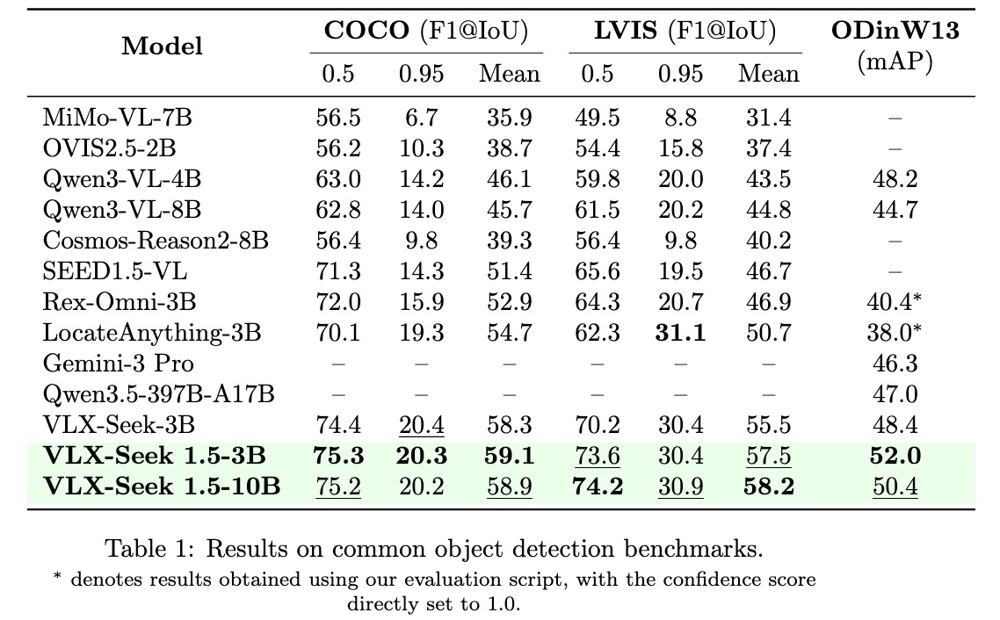
Table 1: General recognition benchmark results.
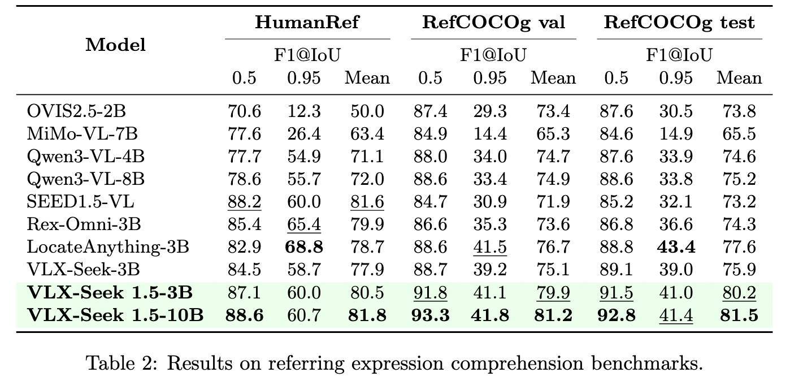
Table 2: General REC benchmark results.
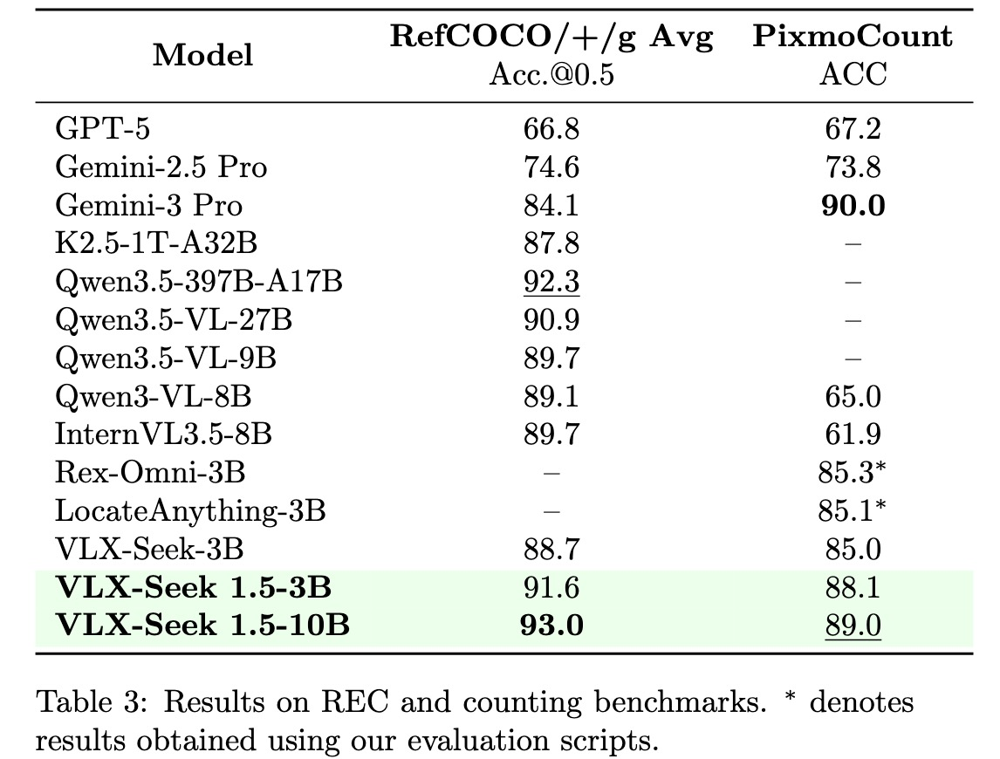
Table 3: General REC and grounding benchmark results.
5.2 Drone Scenarios
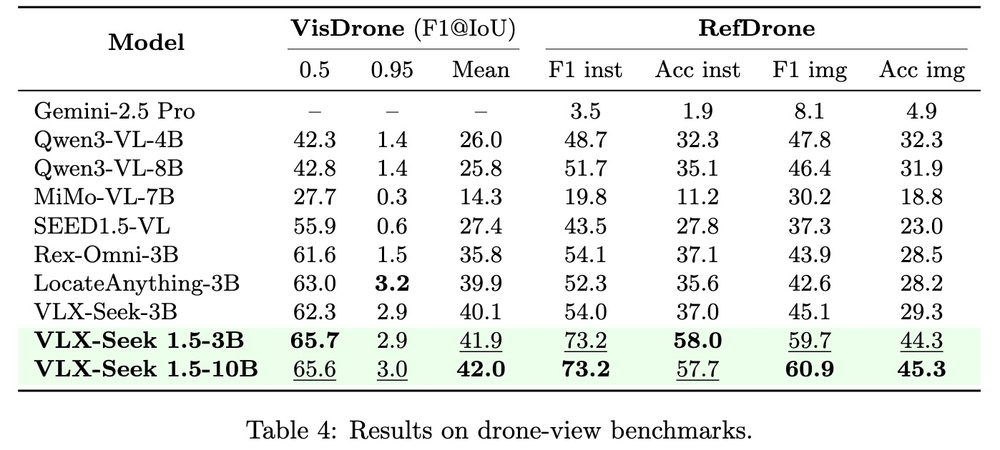
Table 4: Drone scenario benchmark results.
5.3 Embodied Robot Scenarios
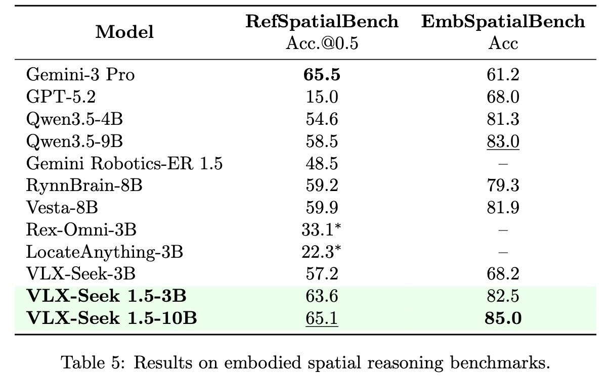
Table 5: Embodied robot scenario benchmark results.
5.4 Object Hallucination Evaluation
In concrete embodied deployments, strong recognition performance is not enough. A model should also avoid detecting targets that do not exist in the image. This is especially important for robots, drones, and monitoring systems, where false target grounding can lead to wrong actions, false alarms, or unstable downstream behavior.
To evaluate this behavior, we introduce an object hallucination metric:
Object Hallucination = FP / Number of GT ObjectsHere, FP denotes false-positive detections for requested targets that are not actually present, and the denominator normalizes the value by the number of ground-truth objects. A lower score indicates fewer hallucinated object detections.
We evaluate this metric on HumanRef, VisDrone, and RefDrone, and compare VLX-Seek 1.5 with VLX-Seek, RexOmni, and NVIDIA LocateAnything. The results show that VLX-Seek 1.5 achieves lower object hallucination scores while also delivering stronger recognition performance, suggesting more reliable rejection behavior without sacrificing grounding accuracy in general referring-expression settings and embodied perception scenarios.
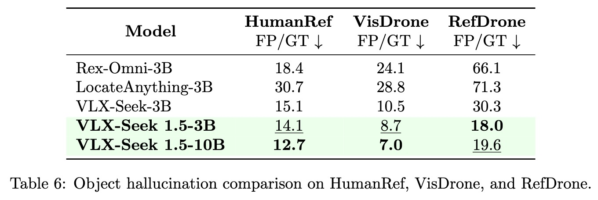
Table 6: Object hallucination evaluation results.
6. Qualitative Examples
We further visualize representative cases by comparing VLX-Seek 1.5-3B with LocateAnything. Each row follows the provided image order, with VLX-Seek 1.5-3B on the left and LocateAnything on the right.
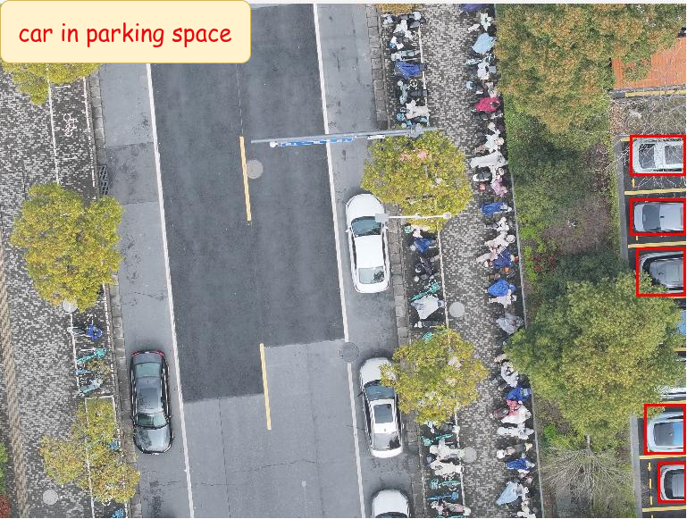
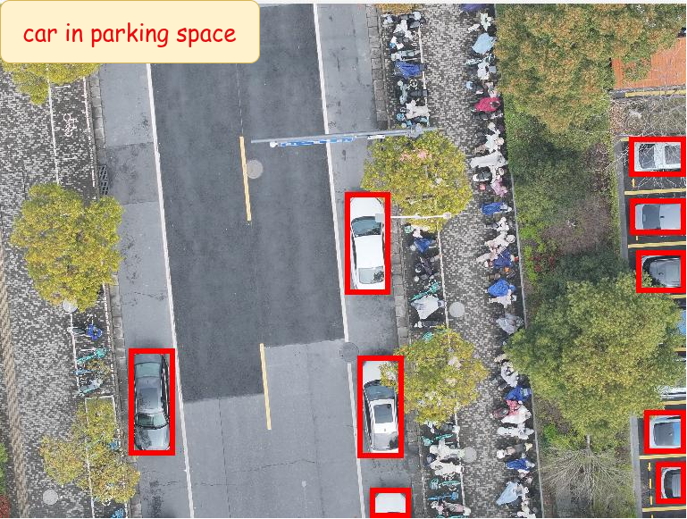
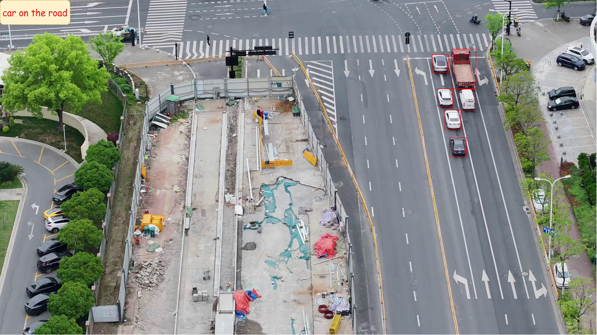
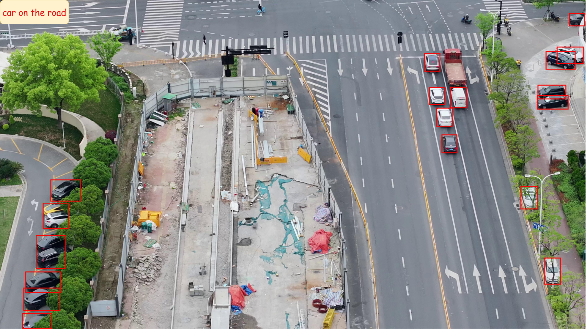
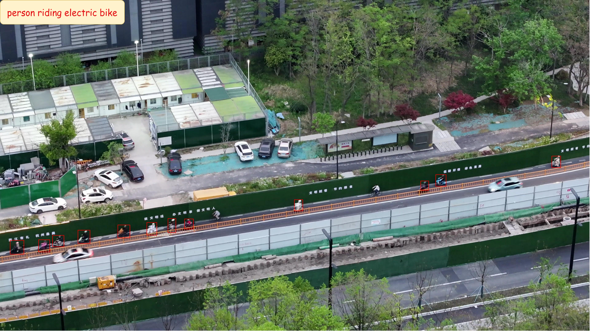
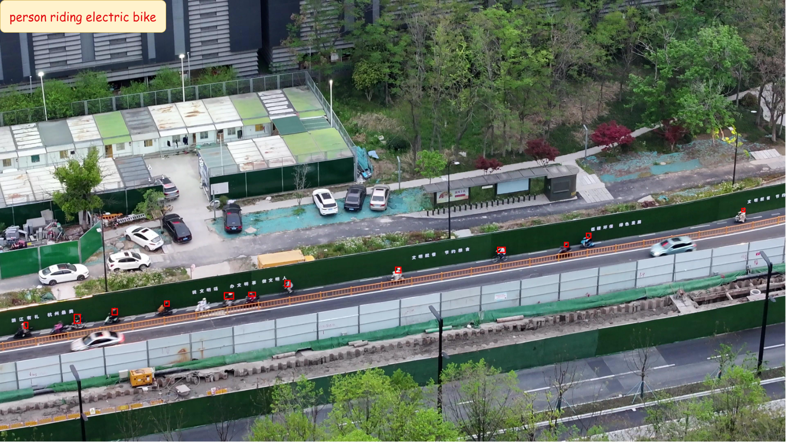
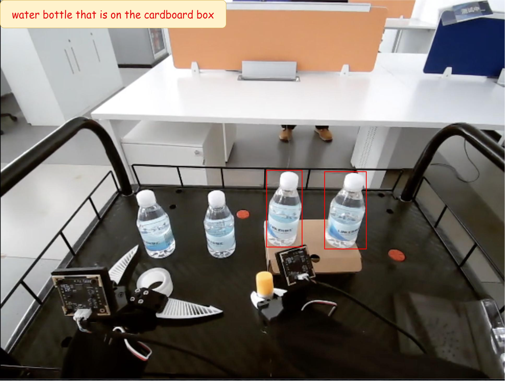
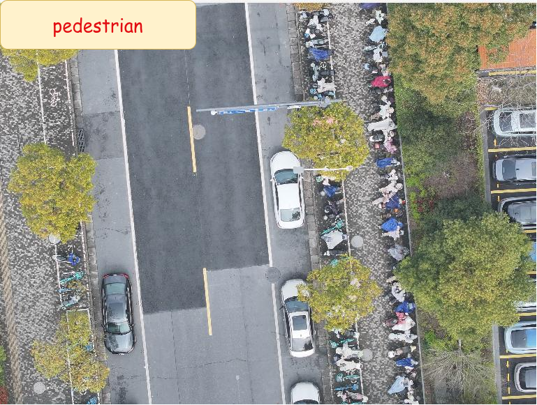
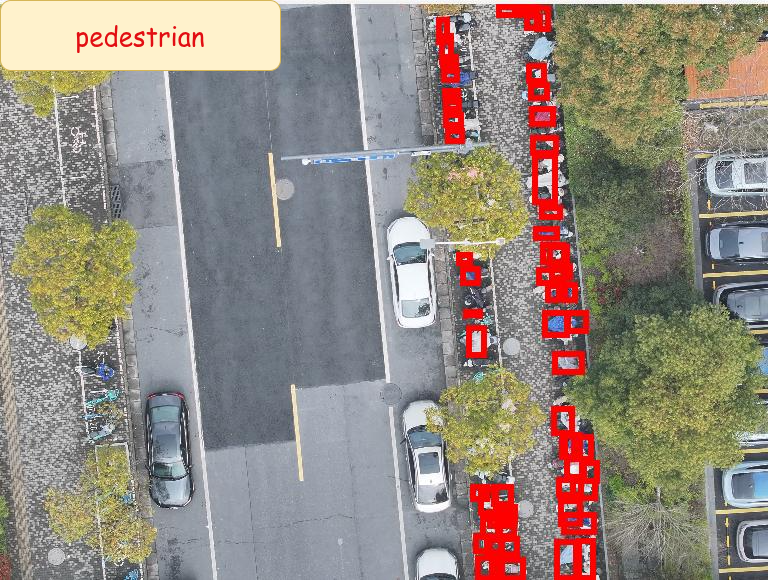